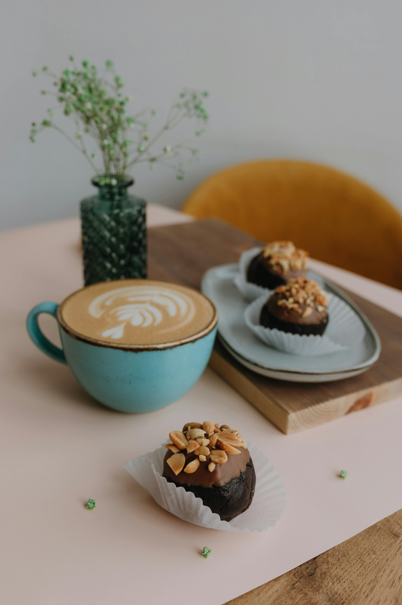
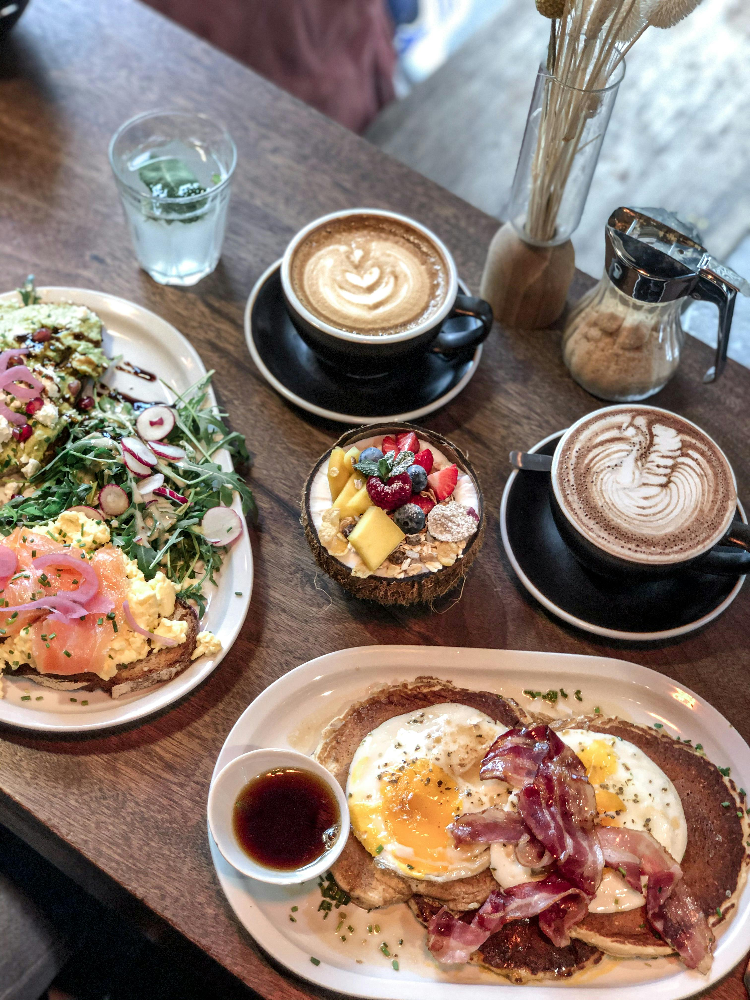

GREEN BRUNCH
Bienvenidos al lugar donde la naturaleza y el café se encuentran



¡Bienvenidos al Oasis del Café! Sumérgete en una experiencia única donde el aroma del café fresco se entrelaza con la frescura de la naturaleza. En nuestro café vivero, te invitamos a explorar un mundo donde cada taza es un viaje sensorial y cada planta es una historia de vida. Ven y descubre la magia de nuestro café vivero, donde la pasión por el café se fusiona con el amor por las plantas. Disfruta de una experiencia única de degustación, donde cada sorbo es una oportunidad para conectar con la esencia misma de la naturaleza.